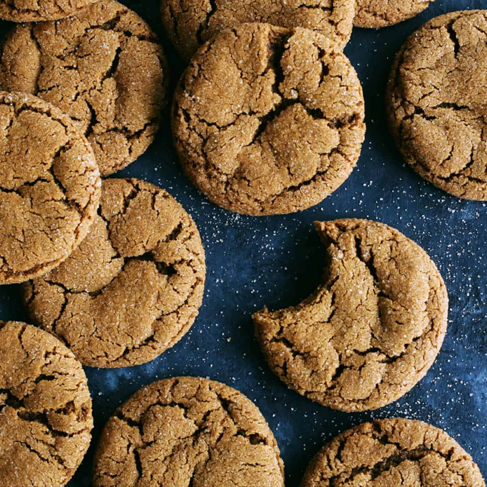

Molasses Cookies

Description
These delicious molasses cookies are one of my favorite desserts. It's a classic recipe, but a timeless one for sure. They are especially tasty when they are warm and eaten alongside a glass of milk!
It's perfect for you if you're vegetarian or allergic to nuts. You can even put them in the freezer! The yield is of about 14 cookies.
Ingredients
- 375 g (2 1/2 cups) unbleached all-purpose flour
- 5 ml (1 tsp) baking soda
- 5 ml (1 tsp) baking powder
- 2.5 ml (1/2 tsp) ground cinnamon
- 2.5 ml (1/2 tsp) ground ginger
- 1 pinch of ground cloves
- 1 pinch of salt
- 115 g (1/2 cup) unsalted butter, softened
- 160 g (3/4 cup) brown sugar
- 125 ml (1/2 cup) molasses
- 1 egg
- 30 ml (2 tbsp.) milk
Preparation
- Place the grill at the center of the oven. Preheat the oven to 180°C (350°F). Line two cookie sheets with parchment paper.
- In a bowl, mix the flour, bicarbonate of soda, baking powder, spices and salt.
- In another bowl, cream the butter with the brown sugar and molasses with an electric mixer. Add the egg and mix well. At low speed or with a wooden spoon, add the dry ingredients alternately with the milk.
- Using a 60 ml (1/4 cup) ice cream scoop, distribute 7 balls of dough onto each cookie sheet, spacing them 6.5 cm (2 1/2 in.) apart.
- Bake, one sheet at a time, for about 18 minutes. Let cool completely on a rack.
- Enjoy!